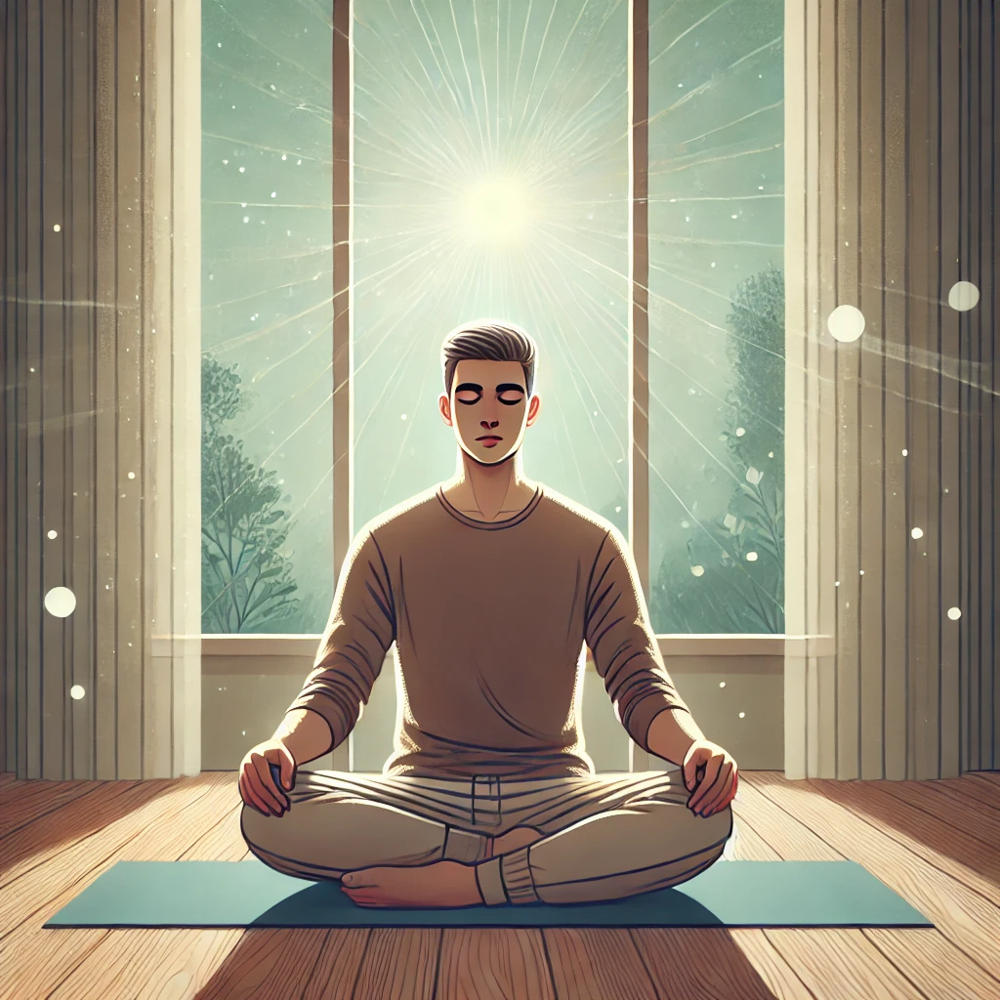

我是谁冥想
这个冥想来自奥修的“我是谁”系列，专注于呼吸觉知和自我探究。其目的是通过观察呼吸、情绪和自我身份问题之间的关系，达到更深的意识状态。
如何练习： 下载音频并按照以下步骤进行冥想。
1. 专注于呼吸
舒适地坐下，闭上眼睛，专注于自然呼吸。观察您的心理状态如何影响呼吸，不要试图控制呼吸，只是作为观察者。
2. 放慢呼吸
逐渐开始放慢呼吸。随着呼吸变慢变深，注意愤怒或焦虑等情绪如何变得不那么强烈。呼吸和情绪是密切相关的。

3. 提问“我是谁？”
保持对呼吸的觉知，开始问自己“我是谁？”这种探究将帮助您超越角色和身份，体验真实的自我。

4. 每日练习
奥修建议每天早晚练习此冥想，以达到最佳效果。持续练习将帮助您达到更深的自我觉知状态。